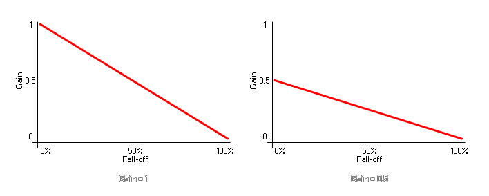

Cette fonction définit le gain maximal (volume) du son. Le volume perçu pour un son peut varier en fonction de la valeur d'atténuation et de la position qu'il a par rapport à l' auditeur. Toutefois, en réglant le gain avec cette fonction, le volume total ne dépassera jamais la valeur de gain spécifiée. L'image ci-dessous illustre l'impact du gain sur le volume de l'émetteur lorsque la décélération est supérieure à 0: 
Cette fonction modifie le volume du son pendant sa lecture, ainsi que tous les sons ultérieurs joués via l’émetteur donné. Notez que sur certaines plates-formes, vous pouvez obtenir un gain supérieur à 1, bien qu'une valeur de 1 soit considérée comme "volume maximum" et toute valeur supérieure peut introduire un écrêtage ou une distorsion audio.
REMARQUE: le volume final sera également influencé par le gain audio global défini par la fonction. audio_master_gain.
audio_emitter_gain(emitter, gain);
| Argument | La description |
|---|---|
| emitter | L'index de l'émetteur à changer. |
| gain | Le gain maximum (1 par défaut). |
N/A
if up
{
gain += 0.05;
if gain >= 1 up = false;
}
else
{
gain += 0.05;
if gain <= 0 up = true;
}
audio_emitter_gain(s_emit, gain);
Le code ci-dessus définit la variable "gain" sur différentes valeurs, puis utilise cette même variable pour définir le gain de l'émetteur indexé dans la variable "s_emit".